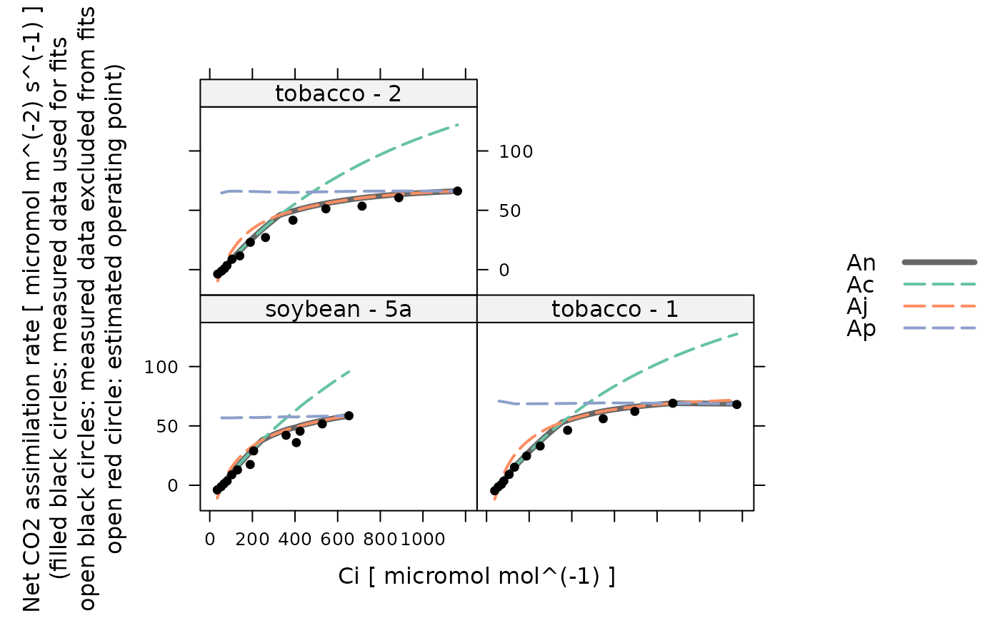

Make an initial guess of FvCB model parameter values for one curve
initial_guess_c3_aci.RdCreates a function that makes an initial guess of FvCB model parameter values
for one curve. The returned function meets the requirements for the
initial_guess_fun input argument of fit_c3_aci.
Values estimated by this guessing function should be considered inaccurate, and should always be improved upon by an optimizer.
Usage
initial_guess_c3_aci(
cc_threshold_rd = 100,
Oc = 210000,
atp_use = 4.0,
nadph_use = 8.0,
a_column_name = 'A',
cc_column_name = 'Cc',
kc_column_name = 'Kc',
ko_column_name = 'Ko',
gamma_star_column_name = 'Gamma_star',
vcmax_norm_column_name = 'Vcmax_norm',
rd_norm_column_name = 'Rd_norm',
j_norm_column_name = 'J_norm'
)Arguments
- cc_threshold_rd
An upper cutoff value for the chloroplast CO2 concentration in
micromol mol^(-1)to be used when estimatingRd.- Oc
The concentration of O2 in the chloroplast, expressed in
micromol mol^(-1). This is often assumed to be the ambient value. For air measurements, this would be 21 percent O2, which is 210000 ppm. For low oxygen measurements, this would be 2 percent O2, which is about 20000 ppm.- atp_use
The number of ATP molecules used per C3 cycle.
- nadph_use
The number of NADPH molecules used per C3 cycle.
- a_column_name
The name of the column in
licor_exdfthat contains the net assimilation inmicromol m^(-2) s^(-1).- cc_column_name
The name of the column in
exdf_objthat contains the chloroplastic CO2 concentration inmicromol mol^(-1).- kc_column_name
The name of the column in
exdf_objthat contains the Michaelis-Menten constant for rubisco carboxylation inmicromol mol^(-1).- ko_column_name
The name of the column in
exdf_objthat contains the Michaelis-Menten constant for rubisco oxygenation inmmol mol^(-1).- gamma_star_column_name
The name of the column in
exdf_objthat contains theGamma_starvalues inmicromol mol^(-1).- vcmax_norm_column_name
The name of the column in
exdf_objthat contains the normalizedVcmaxvalues (with units ofnormalized to Vcmax at 25 degrees C).- rd_norm_column_name
The name of the column in
exdf_objthat contains the normalizedRdvalues (with units ofnormalized to Rd at 25 degrees C).- j_norm_column_name
The name of the column in
exdf_objthat contains the normalizedJvalues (with units ofnormalized to J at 25 degrees C).
Details
Here we estimate values of Rd, Vcmax, J, and TPU
from a measured C3 CO2 response curve. For more information about these
parameters, see the documentation for calculate_c3_assimilation.
To estimate these parameter values, we use several equations from S. von
Caemmerer, "Biochemical Models of Leaf Photosynthesis" (CSIRO Publishing,
2000) [doi:10.1071/9780643103405
]. Any equation numbers referenced below are
from this book.
Estimating Rd: An estimate for
Rdcan be obtained using Equation 2.20. To start, note that the termKc * (1 + Oc / Ko)from this equation typically has a value of around1000 ppm. So, when the concentration of CO2 in the chloroplast is low,Cc + Kc * (1 + Oc / Ko)can be approximated asKc * (1 + Oc / Ko). Under these conditions, Equation 2.20 simplifies to a linear relationship betweenAcandCc:Ac = (Cc - Gamma_star) * Vcmax / (Kc * (1.0 + Oc / Ko)) - Rd. Additionally,Ac = -RdwhenCc = Gamma_star. So, to estimateRd, we make a linear fit ofAvs.Ccin the lowCcrange where assimilation is expected to be rubisco limited and this linear equation is expected to be valid. Then, we evaluate the linear model atCc = Gamma_star, estimatingRdas the negative of the predicted assimilation value at that point.Estimating Vcmax: An estimate for
Vcmaxcan also be obtained from Equation 2.20. In this case, we simply solve the equation forVcmaxand then use it to calculate a value ofVcmaxat each point in the curve from the measured values ofAandCc, and the value ofRdestimated as above. In the rubisco-limited part of the curve,A = Acand the estimated values ofVcmaxshould be reasonable. In other parts of the curve,Acis not the limiting rate, soA < Ac. Consequently, the estimated values ofVcmaxin these parts of the curve will be smaller. So, to make an overall estimate, we choose the the largest estimatedVcmaxvalue.Estimating J: An estimate for
Jcan be obtained by solving Equation 2.23 forJ, similar to the method used to estimateVcmax.Estimating TPU: An estimate for
TPUcan be obtained by solving Equation 2.26 forTPU, similar to the method used to estimateVcmax.
Value
A function with one input argument rc_exdf, which should be an
exdf object representing one C3 CO2 response curve. The return value of
this function will be a numeric vector with four elements, representing the
values of TPU, J, Rd, and Vcmax (in that order) at
25 degrees C.
Examples
# Read an example Licor file included in the PhotoGEA package
licor_file <- read_gasex_file(
system.file('extdata', 'c3_aci_1.xlsx', package = 'PhotoGEA', mustWork = TRUE)
)
# Define a new column that uniquely identifies each curve
licor_file[, 'species_plot'] <-
paste(licor_file[, 'species'], '-', licor_file[, 'plot'] )
# Organize the data
licor_file <- organize_response_curve_data(
licor_file,
'species_plot',
c(9, 10, 16),
'CO2_r_sp'
)
# Specify an infinite mesophyll conductance (so `Cc` = `Ci`)
licor_file <- set_variable(
licor_file,
'gmc', 'mol m^(-2) s^(-1) bar^(-1)', value = Inf
)
# Calculate the total pressure in the Licor chamber
licor_file <- calculate_total_pressure(licor_file)
# Calculate Cc
licor_file <- apply_gm(licor_file)
# Calculate temperature-dependent values of C3 photosynthetic parameters
licor_file <- calculate_arrhenius(licor_file, c3_arrhenius_bernacchi)
# Create the guessing function
guessing_func <- initial_guess_c3_aci()
# Apply it and see the initial guesses for each curve
str(by(licor_file, licor_file[, 'species_plot'], guessing_func))
#> List of 3
#> $ soybean - 5a: num [1:4] 19.739 208.981 0.439 177.739
#> $ tobacco - 1 : num [1:4] 23.403 247.436 0.816 171.186
#> $ tobacco - 2 : num [1:4] 22.423 220.466 0.751 159.862
# Calculate simulated A-Ci curves based on the guesses and compare them to the
# actual data
calculated_aci <- do.call(rbind, by(
licor_file,
licor_file[, 'species_plot'],
function(x) {
param <- guessing_func(x)
calculate_c3_assimilation(x, param[1], param[2], param[3], param[4])
}
))
lattice::xyplot(
Ac + Aj + Ap + An + A ~ Cc | species_plot,
data = cbind(licor_file, calculated_aci)$main_data,
type = 'b',
auto = TRUE,
grid = TRUE
)
